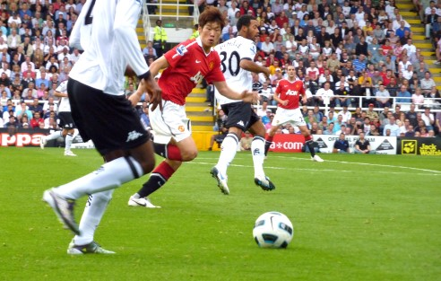

양편이 대항하는 구기종목의 하나로, 발을 사용하여 볼을 다루고 골을 다투는 대표적인 팀 스포츠이다.
축구는 손과 팔을 제외한 신체의 모든 부위로 볼을 다룰 수가 있으므로 경기 기술이 다양하고, 많은 양의 달리기가 필요한 경기이다.
또한 경기 상황이 매 순간 새로우므로 선수는 자신의 판단에 따라서 게임을 펼쳐 나가야 한다.
드리블, 슈팅, 패스, 트래핑 등의 기술을 연마하면서 민첩성, 협응력 등을 양성할 수 있고 격렬한 게임을 통해 강한 지구력과 투지를 배양할 수 있을 뿐만 아니라
팀 스포츠로서 자신만의 독자적 노력으로 뜻을 이룰 수 없다는 특성에 의해 협동심, 책임감, 단결심, 희생정신 등의 사회성 육성에 도움이 된다.